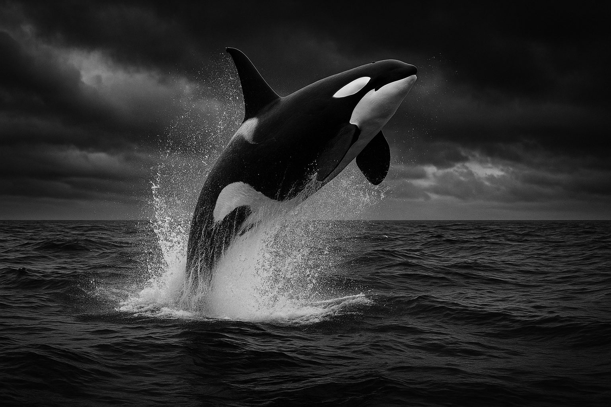

Family
Orcas are the largest members of the dolphin family, Delphinidae, despite their whale-sized public image.
Orcas belong to the dolphin family, but their size, musculature, and ecological range make them one of the ocean’s most formidable marine mammals.

Orcas are the largest members of the dolphin family, Delphinidae, despite their whale-sized public image.
Their streamlined body, powerful tail stock, and rigid dorsal fin support efficient high-speed travel.
The iconic black-and-white pattern may help with visual contrast and recognition in marine light environments.
Conical teeth are suited for gripping prey, whether fish, marine mammals, or other large targets.
Lifespan varies by sex and population, but long-lived females are a defining part of orca society. Some females are estimated to live many decades, with post-reproductive years that still matter enormously to pod success.
That longevity means biology and social structure are tightly connected. Physical survival is only part of the story. The retention of ecological memory matters too.
Not every orca population behaves the same way. Scientists often distinguish ecotypes or communities that differ in prey preference, movement patterns, and vocal behavior.
Some communities focus heavily on fish and may use quieter or more efficient tactics for schooling prey.
Other communities target marine mammals and may use stealth, coordination, and high-speed pursuit.
Local waters, prey, and tradition shape how different orca groups behave through time.